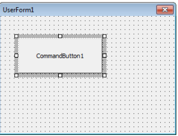
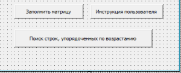
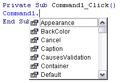
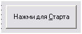

Элемент управления CommandButton
CommandButton – это кнопка, управляющая кнопка. При нажатии на кнопку в приложении выполняются определенные, разработчиком, действия. Применяется для выполнения команд и запуска программ.
Является наиболее часто применяемым элементом.
В этой статья рассмотрим основные свойства, методы и события элемента CommandButton.
рис 1.1 Элемент управления CommandButton на панели ToolBox

рис. 1.2 Элемент управления CommandButton на форме

рис. 1.3 Пример элемента управления CommandButton на форме
Чтобы добавить кнопку на форму, необходимо произвести двойной щелчок по пиктограмме кнопки на панели элементов управления. Либо перетащить элемент CommandButton с панели элементов управления на форму.
После добавления кнопки, она выделяется маркерами для изменения размера. При попытке перетащить кнопку за угловые маркеры будут изменяться, как ширина, так и высота кнопки. Если изменять размер, потянув за другие маркеры, то изменяется соответственно, либо высота, либо ширина.
Изменять размер кнопки можно так же и с помощью клавиатуры.
Для этого необходимо, выделить кнопку, т.е. щелкнуть по кнопке, чтобы появились маркеры. Нажать и удерживать клавишу Shift на клавиатуре, стрелками влево, вправо, вверх и вниз изменять размер элемента CommandButton.
Если же выделить кнопку и удерживая клавишу Ctrl на клавиатуре, стрелками влево, вправо, вверх и вниз, можно изменять место положения кнопки на форме.
Итак, кнопку мы уже расположили на форме, теперь проделаем простую операцию. Произведем двойной щелчок на кнопке и попадем в окно редактирования кода. По умолчанию открывается наиболее часто используемая процедура обработки события Click.
Private Sub Command1_Click()
‘ Знак апострофа в коде указывает, что это комментарий, в данном случае
‘ текст выделяется зеленым цветом. Здесь будет располагаться код, который
‘ произойдет по событию Click элемента CommandButton
End Sub
Добавим в процедуру обработки события Click следующее: Command1 и поставим точку, мы увидим весь перечень свойств и методов элемента кнопка (Рис 2). Есть некоторые свойства, которые доступны лишь во время выполнения приложения. Эти свойства не отображаются в окне свойств Visual Basic.

Рис 2. Ниспадающее меню, содержащее методы и свойства элемента CommandButton
Свойства CommandButton
Appearance – объемный вид.
Значения:
BackColor – цвет фона кнопки, можно выбрать из двух вкладок System или Palette. Если цвет выбирается из системной вкладки, то он будет, зависеть от цветовой схемы Windows. В моей статье “Фундамент программы или основные свойства форм” я приводил цветовые константы Visual Basic. Использование констант при задаче цвета удобнее, проще запомнить vbWhite, чем 16777215. Т.е. Const vbWhite = 16777215 (&HFFFFFF) и задавать цвет можно как константой, так и значением &HFFFFFF.
Следовательно, два следующих кода выполнять одно и тоже действие, зададут белый цвет кнопке.
Command1.BackColor = vbWhite
Command1.BackColor = &HFFFFFF
Главное не забывать, чтобы изменить цвет необходимо установить свойство Style в Graphical.
Cancel – будет ли кнопка срабатывать по нажатию клавиши Escape. Т.е. кнопка реагирует на все нажатия клавиши Escape на клавиатуре. Только у одной кнопке на форме свойство Cancel, может быть True.
Значения:
Пример использования:
Private Sub Command1_Click()
End
End Sub
По нажатию клавиши Escape выполнится процедура обработки события Click, и приложение завершит работу.
Caption – заголовок кнопки, не путайте со свойством Name, свойство Caption задает текст, который будет отображаться на кнопке. Обычно несет информацию о том, какое действие произойдет после нажатия на кнопку.
Интересным моментом является, возможность, управления кнопкой с помощью клавиши ALT. В имени кнопки следует указать “амперсанд” (&) – “Нажми для &Старта”. На кнопке знак амперсанд отображаться не будет, а буква, перед которой он был поставлен, будет подчеркнута. И назначена как горячая, при нажатии ALT + С – произойдет событие Click для кнопки. Не стоит забывать про раскладку клавиатуры.

Рис 3. Изображение кнопки, в имени которой поставлен знак “&”.
CausesValidation – это свойство, нужно устанавливать, если вы будете использовать событие Validate, для текстового поля.
Значения:
Пример использования:
Private Sub Text1_Validate(Cancel As Boolean)
If Not (IsNumeric(Text1.Text)) Then
MsgBox “Введите в текстовое поле числа”
Cancel = True
End If
End Sub
В примере Cancel = True возвращает фокус обратно текстовому полю.
Default – когда, свойство установлено в True, кнопка окаймляется черной рамкой и реагирует на все нажатия клавиши Enter на клавиатуре. Только у одной кнопке на форме свойство Default, может быть True.
Значения:
DisabledPicture – изображение, которое будет на кнопке, пока она не доступна. Для расположения изображения, необходимо установить свойство Style в Graphical.
DownPicture – изображение, которое будет на кнопке, пока она нажата. Для расположения изображения, необходимо установить свойство Style в Graphical.
DragIcon – значок, который приобретет указатель мыши при нажатии на кнопку и движении курсором. Для работы свойства необходимо установить свойство DragMode в Automatic.
DragMode – определяет режим перетаскивания для объекта.
Enabled – блокировка кнопки. Если вам необходимо ограничить пользователя, т.е., чтобы он дождался выполнения какой либо операции, кнопку можно заблокировать.
Значения:
Font – тип шрифта, который будет установлен для текста на кнопке. Выбирается из списка.
FontBold – полужирный шрифт.
Значения:
FontItalic – курсив.
Значения:
FontName – название шрифта.
FontSize – размер шрифта в пунктах. Максимальное значение 2160.
FontStrikethru – перечеркнутый текст.
Значения:
FontUnderline – подчеркнутый текст.
Значения:
Height – высота кнопки.
Index – по умолчанию, свойству не присвоено ни какое значение. Используется при создании массивов элементов управления. Принимает значения от 0 и до нужного числа элементов, т.е. если необходимо использовать в массиве 3 кнопки, то свойства Index у кнопок будут 0, 1, 2 соответственно.
Вы спросите, а как использовать массивы элементов управления?
А вот как.
Создаем на форме одну кнопку, задаем свойству Index значение 0. Далее копируем кнопку в буфер и вставляем на форму. Свойство Index у вставленной кнопки будет равно 1. Создадим всего 3 кнопки.
Какие выгоды при использовании массивов элементов управления?
Упрощение написания программного кода, уменьшение объема написанного кода. Плюсов много.
Private Sub Form_Load()
Dim i As Byte
For i = 0 To 2
Command1(i).Caption = “Кнопка № ” & i
Command1(i).ToolTipText = “Подсказка для кнопки № ” & i
Next
End Sub
Используя массив, мы в 3 раза уменьшили объем кода. Т.е. мы не стали писать для каждой кнопки отдельный код, а написали один общий для всего массива элементов.
Вы спросите, а как обработать нажатие на кнопку?
Ведь при щелчках на любой из кнопок мы попадаем в код одной и той же процедуры.
Да именно так! Эта процедура обработки нажатий на любую из кнопок массива.
Private Sub Command1_Click(Index As Integer)
End Sub
А различаются события для разных элементов по индексам.
Private Sub Command1_Click(Index As Integer)
Label1 = “Нажата кнопка № ” & Index
Label1.ToolTipText = “Подсказка для метки, нажата кнопка № ” & Index
End Sub
Left – определяет расположение кнопки на форме, от левого края кнопки до левого края формы.
MouseIcon – выбор графического изображения курсора. Выбираем на диске нужный указатель и устанавливаем свойство MousePointer в 99 – Custom, после чего, когда указатель мыши будет перемещаться над кнопкой, он будет принимать выбранный вами вид.
MousePointer – вид указателя мыши. Числовое значение.
Name – имя кнопки. Все обращения и действия с кнопкой производятся с указанием имени. Обычно к имени кнопки добавляют префикс cmd.
OLEDropMode – как объект-приемник обрабатывает операцию перетаскивания.
Значения:
Picture – изображение, которое будет располагаться на кнопке, в обычном состоянии. Для расположения изображения, необходимо установить свойство Style в Graphical.
Style – стиль кнопки.
Значения:
TabIndex – при добавлении нового элемента управления на форму, элементы получают номер (если они могут получить фокус), от 0 и далее. Если расположить на форме несколько элементов и запустить проект, то по нажатию клавиши Tab фокус будет получать элемента за элементом. При загрузке формы фокус получит элемент, у которого свойство TabIndex = 0. Изменить это можно, если передать фокус нужному элементу при загрузке.
Private Sub Form_Activate()
Text1.SetFocus
End Sub
TabStop – будет ли фокус перемещаться на кнопку при нажатии клавиши Tab. Некоторые элементы управления не могут получить фокус, об этом не стоит забывать. Не видимые или заблокированные элементы так же не могут получить фокус.
Значения:
ToolTipText – всплывающая подсказка, которая будет появляться если задержать указатель мыши над кнопкой.
Top – определяет расположение кнопки на форме, от верхнего края кнопки до верхнего края формы.
Visible – видима ли кнопка на форме.
Значения:
Width – ширина кнопки.
Методы CommandButton
Drag – позволяет осуществлять операцию перетаскивания.
Move – позволяет перемещать элемент управления по форме.
Пример использования:
Private Sub Command1_MouseUp _
(Button As Integer, _
Shift As Integer, _
X As Single, _
Y As Single)
Command1.Move X + 100, Y + 100
End Sub
SetFocus – используется для передачи фокуса необходимой кнопке.
ZOrder – с помощью метода, можно определить порядок перекрытия объектов на форме.
Пример использования:
На форме расположите элемент PictureBox и три кнопки. На первую кнопку положите сверху PictureBox и загрузить любую картинку, чтобы кнопку не было видно, в режиме редактирования кода.
Private Sub Command2_Click()
Command1.ZOrder 0
End Sub
Private Sub Command3_Click()
Command1.ZOrder 1
End Sub
По нажатию кнопок 2 и 3, по очереди, кнопка, то появляется, то исчезает. Она не становится не видимой, просто меняется ее местоположение, над картинкой и под картинкой. Аналогичное действие можно совершить и в режиме редактирования кода. Расположите картинку так, чтобы она перекрывал кнопку, нажмите правую кнопку мыши на любом из этих элементов. И при помощи Send to Back и Bring to Front измените расположение объекта.
События CommandButton
Click – наиболее часто используемое событие. Происходит при нажатии на кнопку. Если кнопка имеет фокус, событие происходит по нажатию клавиши “Пробел” на клавиатуре. Если свойства Default и Cancel установлены в True, то соответственно событие происходит, по нажатию клавиш Enter и Escape.
GotFocus – происходит когда кнопка получает фокус, при нажатии клавиши Tab или с помощью метода SetFocus.
KeyDown – происходит, когда кнопка имеет фокус и пользователь нажимает клавишу на клавиатуре.
KeyPress – происходит, когда пользователь нажал и отпустил клавишу, можно получить код нажатой клавиши.
Пример использования:
Private Sub Command1_KeyPress(KeyAscii As Integer)
Label1 = KeyAscii
End Sub
KeyUp – происходит, когда кнопка имеет фокус и пользователь отпускает клавишу на клавиатуре.
LostFocus – происходит во время передачи фокуса от кнопки к другому элементу.
MouseDown – происходит во время нажатия кнопки мыши на кнопке.
MouseMove – происходит при перемещении указателя мыши над кнопкой.
MouseUp – происходит лишь тогда, когда пользователь после нажатия, отпускает клавишу мыши. Лучше использовать вместо события Click, т.к. после нажатия пользователь может передумать и захочет отменить действие.
События MouseDown, MouseMove и MouseUp имеют одинаковые параметры:
Command1_MouseDown(Button As Integer,
Shift As Integer,
X As Single,
Y As Single)
Command1_MouseMove(Button As Integer,
Shift As Integer,
X As Single,
Y As Single)
Command1_MouseUp(Button As Integer,
Shift As Integer,
X As Single,
Y As Single)
Button – содержит номер клавиши мыши.
Константы:
Const vbLeftButton = 1
Const vbMiddleButton = 4
Const vbRightButton = 2
Пример использования:
If Button = 1 Then Text1 = _
“Ты нажал левую кнопку мыши”
If Button = 4 Then Text1 = _
“Ты нажал среднюю кнопку мыши”
If Button = 2 Then Text1 = _
“Ты нажал правую кнопку мыши”
Shift – содержит информацию о состоянии клавиш ALT, CTRL и SHIFT.
Константы:
Const vbAltMask = 4
Const vbCtrlMask = 2
Const vbShiftMask = 1
Пример использования:
If Shift = vbShiftMask Then Text1 = _
“Ты нажал кнопку мыши, удерживая Shift”
If Shift = vbAltMask Then Text1 = _
“Ты нажал кнопку мыши, удерживая Alt”
If Shift = vbCtrlMask Then Text1 = _
“Ты нажал кнопку мыши, удерживая Ctrl”
If (Shift And (vbCtrlMask Or vbShiftMask)) _
= (vbCtrlMask Or vbShiftMask) Then Text1 = _
“Ты нажал кнопку мыши, удерживая Ctrl и Shift”
X, Y – координаты указателя мыши, где произошло событие.